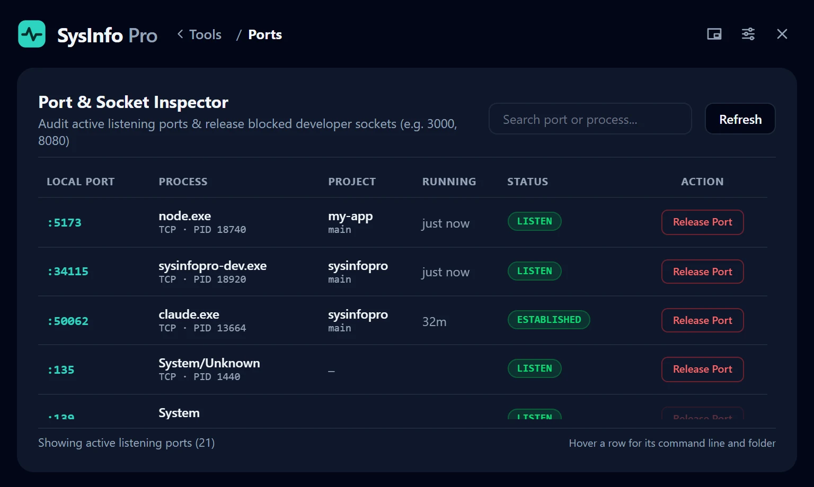

Ports that know their project
See which project and git branch opened each port, how long it has been running, and release it in one click.

Version 3.0 · Windows 10 and 11
Health, storage, ports, PATH and developer caches in one small window. Built for people who write code on Windows.
Free · one portable 12 MB file · no install, no account

Each one answers a question you would otherwise open three programs to answer.
See which project and git branch opened each port, how long it has been running, and release it in one click.

Sizes your npm, pnpm, pip, NuGet, Gradle, Maven, Cargo and Go caches, finds old node_modules folders, and frees what you pick.
Pick the file or folder that will not delete. See every program holding it open, and end the one in the way.
Find the largest folders and files on any drive, then watch a folder to see what is growing right now and how fast.
Startup programs, installed software, listening ports and PATH, compared with the last time you looked.
Antivirus, firewall, updates, BitLocker, Secure Boot and more in one read-only pass. Nothing is changed.
Full inventory down to each memory module, with a one-click report to attach to a support ticket.
Sort running programs by how fast their memory is growing to catch a leak before the machine slows down.
PATH inspector, startup programs, software versions, internet speed test, battery health, disk cleaner and a ten-second stress test.
Shrink the app to a small floating window and keep an eye on CPU, memory, battery and the space left on each drive while you work. An arrow appears the moment a drive starts filling up.

Windows 10 or 11, 64-bit. Free.
SysInfo Pro is free and independent, so the file is not signed with a paid code-signing certificate. Windows and browsers warn about unsigned programs they have not seen often.
You can also read the source and build it yourself from GitHub.